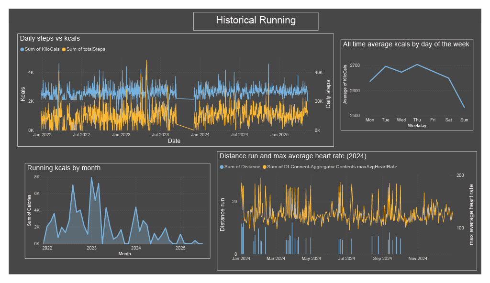
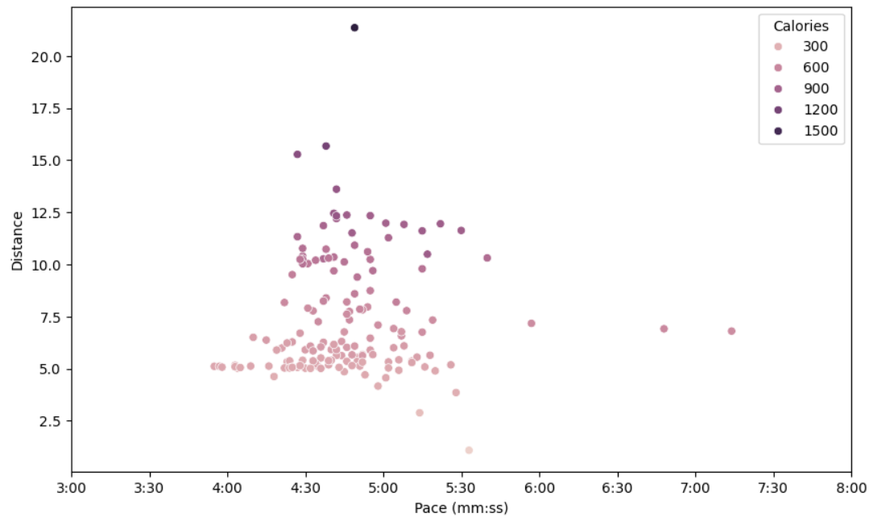
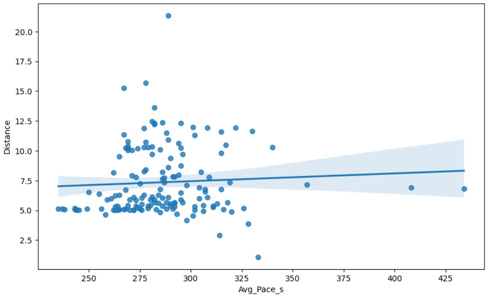

My name is Alex. I trained and worked as a pure mathematician for a while and I'm now working to pick up new data analysis skills. This will a page to document my learning process. It will evolve and grow over time, becoming more blog-like and sophisticated soon!
You can find me on LinkedIn and you can see my mathematics research on my academic website.
For now, here is a record of my first forays into PowerBI and pandas.
I have a Garmin watch which generates a lot of data which is straighforward to access, so seemed like a good place to start with some exploratory data analysis. I posed a few basic questions to answer, as a starting point:
My first port of call was PowerBI, a tool that comes up a lot in job descriptions. Unfortunately, I don't have a corporate account, so don't have access to the 'PowerBI Service', which would allow me to publish a report online. So I settle for the desktop version. Data on recorded activites (runs, walks, etc., anything deliberately recorded) comes as a .csv file. One can also download a much larger JSON file of all the daily collected data, such as steps, heartrate, stress, "body battery"... I set up a workflow to extract what I was interested in from these two data sources and combine them with a join into a single useful table. From there, its a case of playing with PowerBI's extensive GUI-based visualisation tools to create a few plots.
From the first two plots, it is easy to answer the first two questions.
The third plot shows my running since 2022, using monthly running calories as a good measure of general activity. It looks like I peaked at the beginning of 2023 and have been declining since! Finally, another unsurprising observation is that my daily maximum average heart rate tends to be highest when I run.
To address my third question, I plotted pace against distance on a scatter plot. Here I ran into some problems. Pace needs to be stored as a numerical data type so that PowerBI can properly use it to plot, of course. But I want pace to be displayed as mm:ss, to make it useful to understand. PowerBI won't interpret this is a number, and I could not convince it to plot using the numerical value for pace but display mm:ss increments on the axis. This is representative of PowerBI's more fixed, GUI-based, more user-friendly and slightly less flexible setup. Seeking full control, I decided to learn pandas.
As someone with a smattering pf python as well as sagemath experience, pandas was pretty straighforward to pick up. It seems to be widely used too which means there are a plethora of online tutorials and stackexchange questions and answers. And of course ChatGPT is helpful. It is easy to read in .csv and JSON files, and bend the data to your will. I also used seaborn, a shiny plotting package built on mathplotlib. It was straightforward to replicate the plots produced by PowerBI, albeit a slightly more manual task.
More to the point, I was able to produce the desired scatterplot, with a function that converted numerical values of 'ticks' on the axis to the more readable mm:ss format. A nice feature is the ability to plot a third variable using colour, in this instance the calories burned per run.
So, what is the answer to the third question? It seems that there isn't a straightforward correlation between pace and distance after all. Seaborn lets us do a linear regression plot, and we get a pretty much flat gradient (see below). Although it is still true that the very fastest paces only occur for short distances. The colour gradient is pretty and consistent with earlier plots showing calories and steps (and hence distance) going hand-in-hand. There are also clearly a lot of 5k runs!
Jupyter notebooks with my pandas code, and bigger and more interesting data projects.